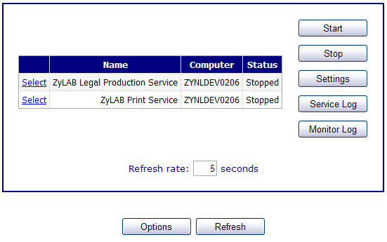
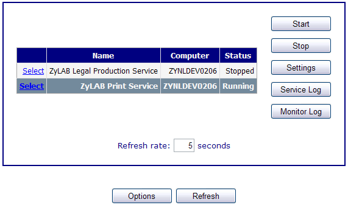

Server Side Printing and Print Service
To make printing of documents quicker and to allow you to continue working the printing is done directly from the server where the index is stored, and not from the PC where the document is viewed. To see available network printers in the print dialog on your PC the ZyLAB print service must be configured and started, and the printers selected.
ZyLAB Print Service Setup
Conditions
You want to set-up the ZyLAB Print Service to be able to print directly from your server.
Instructions
- Open ZyLAB Web Client (in your web browser). Click on Admin > Services Manager to display the Monitor page.
- Check that the ZyLAB Print Service appears in the list of services. If the ZyLAB Print Service is not in the list:
- Click the Options button to display the Options page.
- Select the correct Domain.
- In Computers > Available select the server where the index is stored and use the arrow button (>) to transfer it to the Selected panel.
- In Services > Available select ZyLAB Print Service and use the arrow button (>) to transfer it to the Selected panel.
- Click OK.
- On the Monitor page, click Select on the ZyLAB Print Service.

- Click Start to start the ZyLAB Print Service. The Status changes to Running.

- To automatically start the service click Control Panel > Administrative Tools > Services. Double‑click on ZyLAB Print Service to open its properties window. Change the Startup type to Automatic. Click OK.
Result
The ZyLAB Printer Service is correctly configured and started.